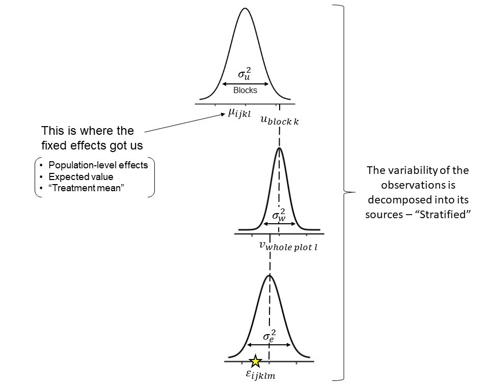
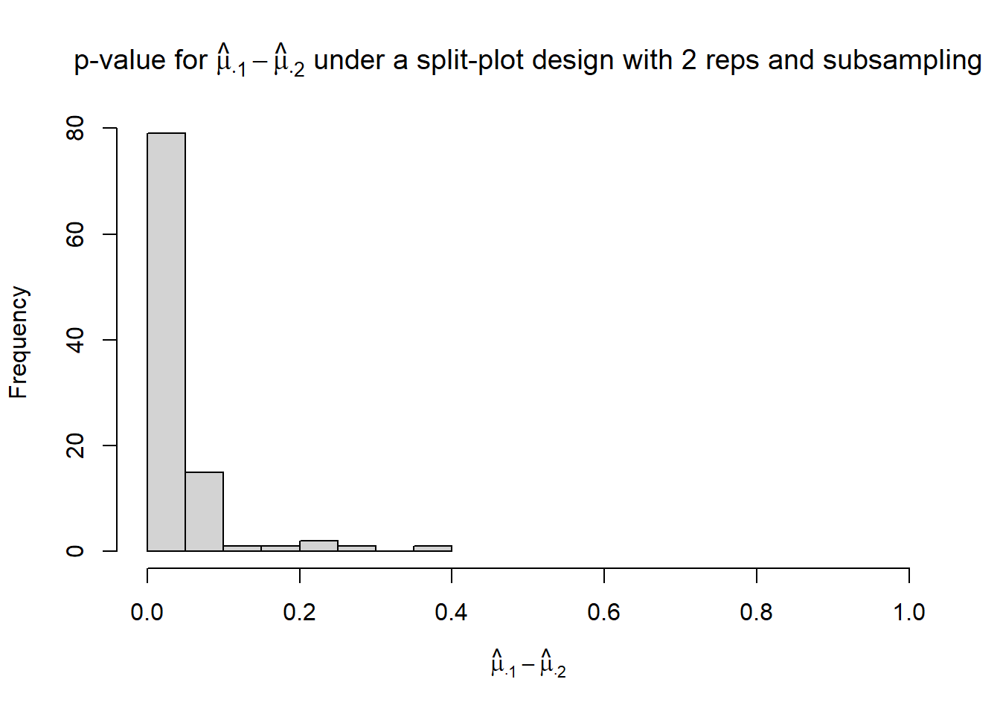
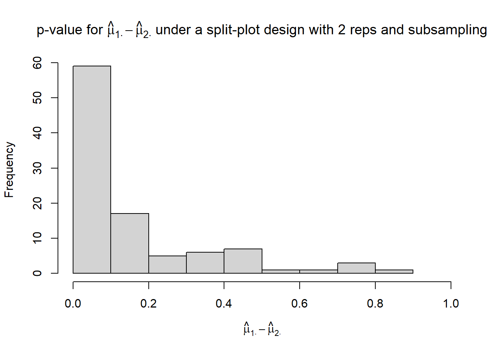
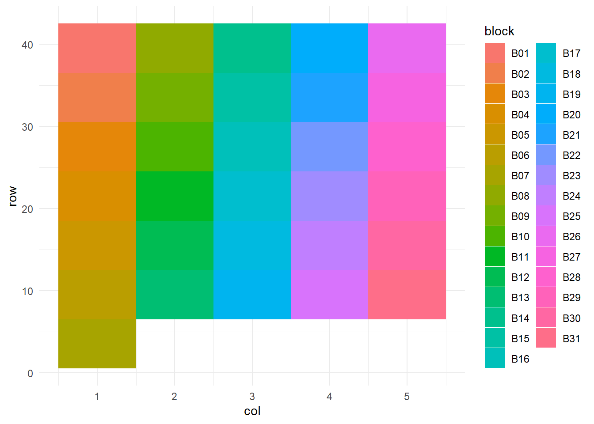

8 Día 4 (tarde): Diagnóstico y selección de modelos.
8.1 Model diagnostics
The philosophy behind model diagnostics aims to determine whether the assumptions behind the data generating process make sense. Knowing that all models are wrong, one could argue that we are bound to make type II erros by concluding that a given model represents the data generating process properly. However, as we know, Statistics helps us summarize our data and make sense of it.
In what follows, we will demonstrate the model checking steps with an applied example:
We revisit the Nitrogen example, where we describe yield as a quadratic function of N fertilizer.

8.2 Generate fake data based on the fitted model
- Goal: to detect systematic differences between the model and observed data.
- See Chapter 8 in Gelman and Hill.
- Perhaps my favorite model checking tool.
- Any discrepancies between fitted model and data will show up here.
- Sometimes, all our models with have flaws, but it’s good to be aware what they are.
library(lme4)
library(tidyverse)
library(latex2exp)
library(ggpubr)
library(mosaic)
dat <- read.csv("../data/N_fert.csv")
m1 <- lm(Yield_SY ~ Total_N, data= dat)
dat$residuals <- resid(m1)
dat$yhat <- predict(m1)
theme_set(theme_pubr())y_sim <- simulate(m1, nsim =30, seed = 42) |>
mutate(Total_N = dat$Total_N,
Yield_SY = dat$Yield_SY) |>
pivot_longer(cols = -c(Total_N, Yield_SY))
y_sim |>
ggplot(aes(value))+
geom_histogram()+
geom_histogram(aes(Yield_SY), fill = "gold", alpha = .3)+
facet_wrap(~name)## `stat_bin()` using `bins = 30`. Pick better value `binwidth`.
## `stat_bin()` using `bins = 30`. Pick better value `binwidth`.
y_sim |>
ggplot(aes(Total_N, value))+
geom_point()+
geom_point(aes(Total_N, Yield_SY), shape = 21, fill = "gold", alpha = .3)+
facet_wrap(~name)
Discuss the plot above: how are the simulated data compared to the observed data?
8.3 Some useful metrics to compare models
8.3.1 Root mean squared error
- Root mean squared error \(RMSE = \sqrt{\frac{1}{n} \cdot \sum_{i=1}^n(y_i-\hat{y}_i)^2}\)
- In-sample versus out-of-sample RMSE
8.3.2 The coefficient of determination R2
- Usually interpreted as the proportion of the variation in \(y\) that is explained with the variation in \(x\).
- Used as a metric for predictive ability and model fit.
- Can increase when adding more predictors.
R2 can be computed as
\[R^2 = \frac{SSM}{SST} = \frac{SS_{MODEL}}{SS_{INT-SLOPE}} = 1 - \frac{SSE}{SST},\]
where \(R^2\) is the coefficient of variation, \(SSM\) is the sum of squares of the model, \(SST\) is the total sum of squares (i.e., the residual sum of squares of an intercept-and-slope model). In essence, \(R^2\) is the ratio between the \(SSE\) of whatever model and the \(SSE\) of an intercept-and-slope model.
8.3.3 On the use of R2 for statistical inference
Why do so many people use the coefficient of variation R2?
- Metrics like RMSE are hard to compare across models (different units)
- R2, however, is dimensionless and much easier to interpret
- “The proportion of variability that is explained by the model”
HOWEVER…
Uncertainty in R2
We don’t get any uncertainty on R2 for free. However, we can find out how good (or bad) an R2 is.
## [1] 0.66525278.3.4 Bootstrapped R2
On one hand, we can obtain a bootstrapped confidence interval of R2 by resampling the data and fitting the same model multiple times:
boot_r2 <- replicate(1000, {
dat_boot <- dat[sample(nrow(dat), replace = TRUE), ]
m_boot <- lm(Yield_SY ~ Total_N + I(Total_N^2), data = dat_boot)
summary(m_boot)$r.squared
})
hist(boot_r2, breaks = 30)
8.3.5 Out-of-sample R2
Given the obvios structure of the data, a more appropriate way to obtain uncertainty on R2 would be an out-of-sample (oos) cross-validation:
R2_oos <- numeric()
for (i in unique(dat$sy)) {
# leave-one-sy-out
d_is <- dat |> filter(sy != i)
d_oos <- dat |> filter(sy == i)
m <- lm(Yield_SY ~ Total_N + I(Total_N^2), data = d_is)
SST_oos <- sum((resid(lm(Yield_SY ~ 1, data =d_oos)))^2)
SSE_oos <- sum((d_oos$Yield_SY - predict(m, newdata = d_oos))^2)
R2_oos[i] <- 1 - SSE_oos/SST_oos
}
R2_oos## [1] 0.7341245 0.3494678 0.3219911 0.8376546 0.9103108## [1] 0.6307098## [1] 0.2766323- Compare all the R2
8.3.6 Adjusted R2
The adjusted R2 also penalizes the addition of extra parameters
\[R^2_{adj} = R^2 - (1 - R^2) \frac{p-1}{n-p},\]
where \(R^2\) is the one defined above, \(p\) is the number of parameters and \(n\) is the total number of observations.
8.3.7 Some issues with R2
- Bootstrapped R2
- Anscombe’s quartet
- Out-of-Sample R2: Estimation and Inference
8.3.8 Akaike Information Criterion (AIC)
- Used as a metric for predictive ability and model fit.
- Lower value is better.
- Values are always compared to other models (i.e., there are no general rules about reasonable AIC values).
The AIC of a given model \(M\) and observed data \(\mathbf{y}\) is calculated as
\[AIC_M = 2p - 2\log(\hat{L}),\]
\(p\) is the number of parameters estimated in the model and \(\hat{L}\) is the maximized value of the likelihood function for the model (i.e., \(\hat{L}=p(\mathbf{y}|\hat{\boldsymbol\beta}, M)\)).
8.3.9 Bayesian Information Criterion (BIC)
The BIC of a given model (and observed data) is a variant of AIC and is calculated as
\[BIC = p\log(n) - 2\log(\hat{L}),\]
where \(p\) is the number of parameters estimated in the model, \(n\) is the number of observations, and \(\hat{L}\) is the maximized value of the likelihood function for the model (i.e., \(\hat{L}=p(\mathbf{y}|\hat{\boldsymbol\beta}, M)\)).